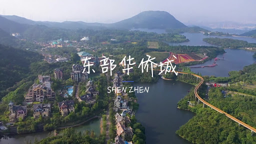
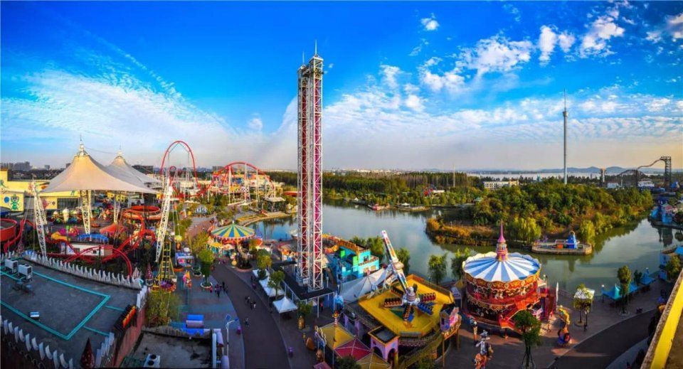

世界之窗
世界之窗把世界奇观、历史遗迹、古今名胜、民间歌舞表演融为一体的人造主题公园。分为世界广场、亚洲区、欧洲区、非洲区、美洲区等八大区域。公园将历史遗迹、名胜、自然风光、世界奇观、民居、雕塑等130多个景点按不同比例仿建。还有民间歌舞、大型演出以及高科技参与性娱乐项目等，晚上还有夜场，活动非常丰富。

东部华侨城
东部华侨城是国内首个集休闲度假、观光旅游、户外运动、科普教育等主题于一体的大型综合性国家生态旅游示范区。包括大侠谷生态乐园和茶溪谷度假公园，集山地郊野和都市主题公园于一体，呈现了一个中西文化交融的世界。其中茵特拉根小镇、海菲德小镇和茶翁古镇，打造出童话一般的茶文化、葡萄酒文化梦幻小镇。每天还会有融合了多种艺术手段，以禅茶文化为主题的大型多媒体交响音画晚会《天禅》在大剧院上演。

深圳欢乐谷
中国最佳主题乐园之一，共分为西班牙广场、卡通城、冒险山、欢乐岛、金矿镇等八大主题区。有100多个老少皆宜、丰富多彩的游乐项目，还从美国、荷兰等国家引入众多全国乃至亚洲独有的项目。连续四年荣膺亚太十大主题公园，是中国主题公园行业的领跑者。拥有如中国第一座悬挂式过山车“雪山飞龙”、亚洲最高过山车“全球至尊弹射式过山车”等项目。